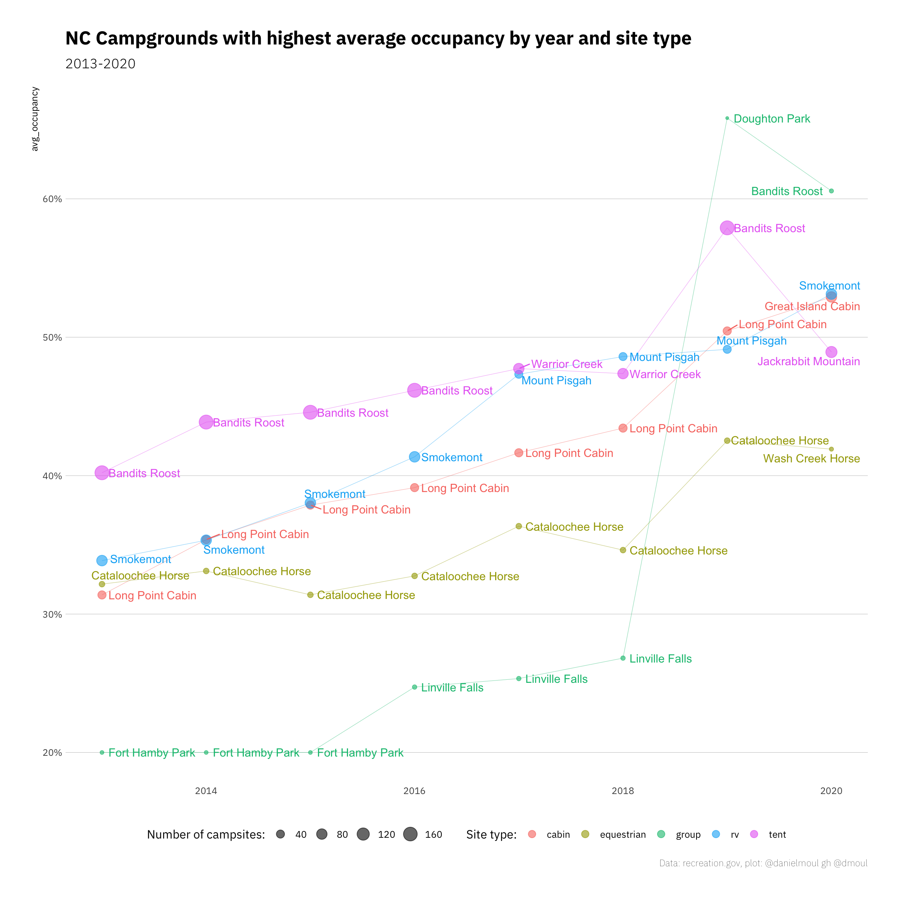
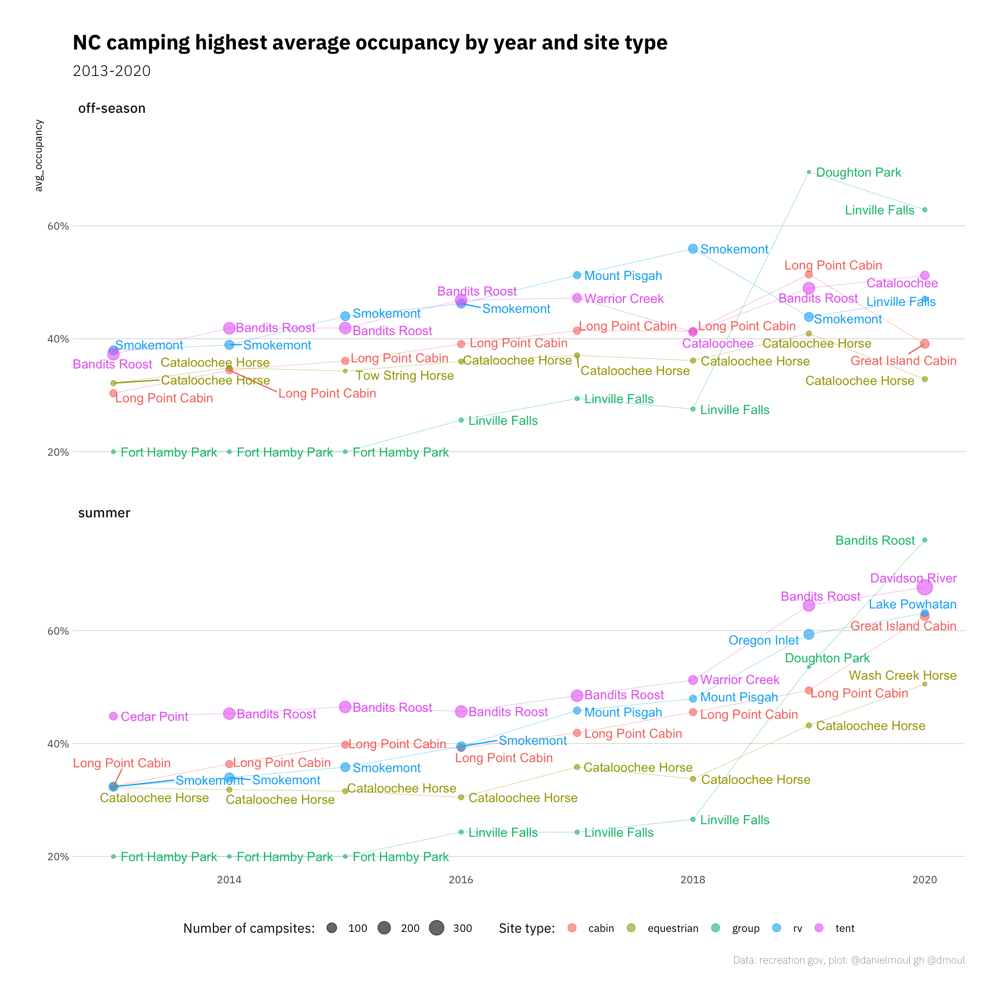
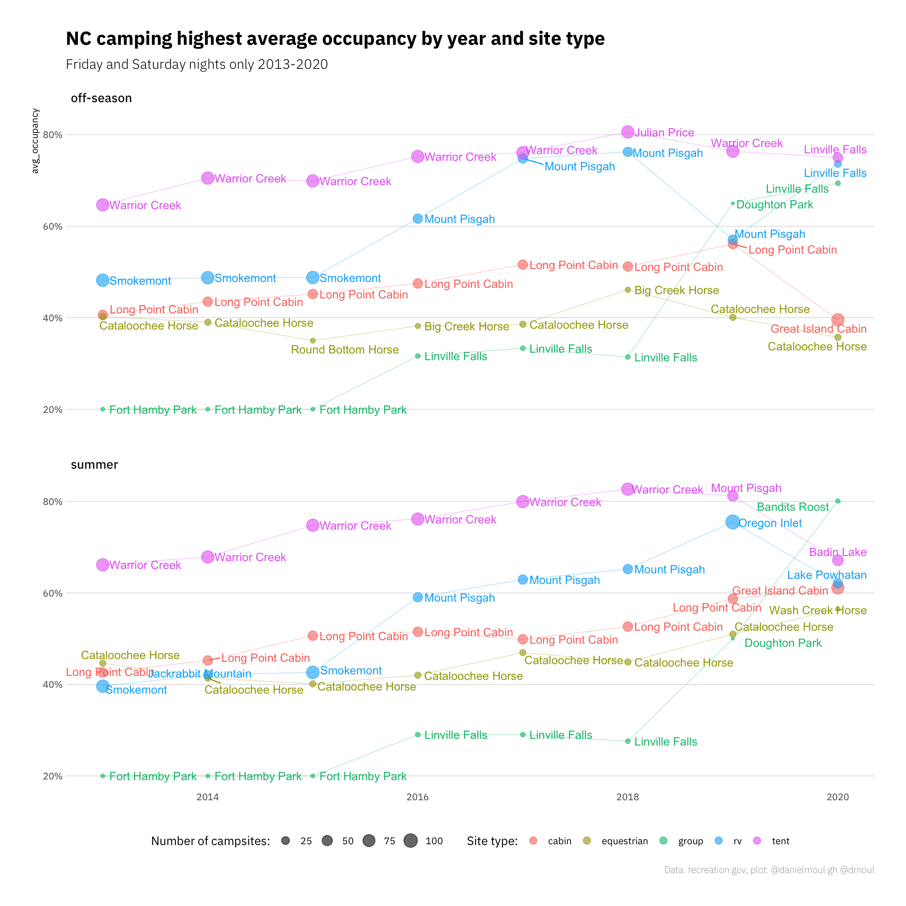
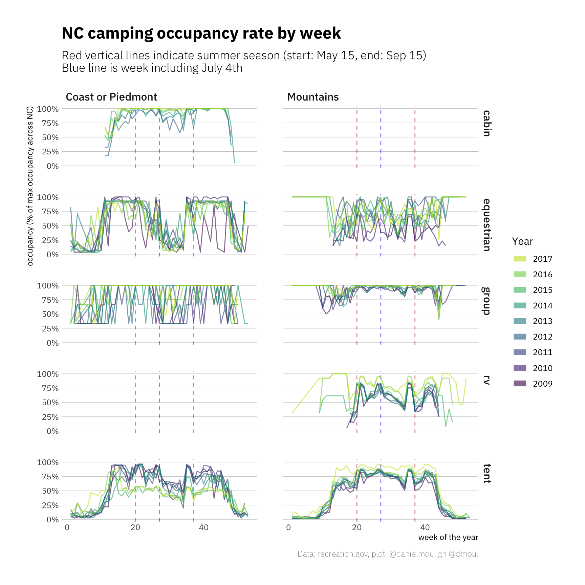
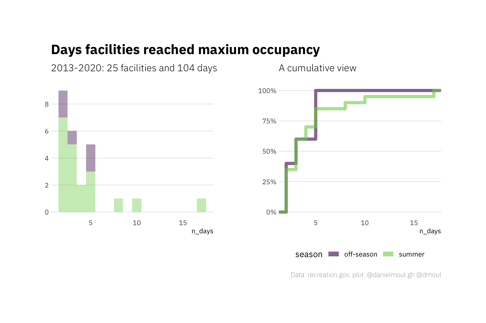
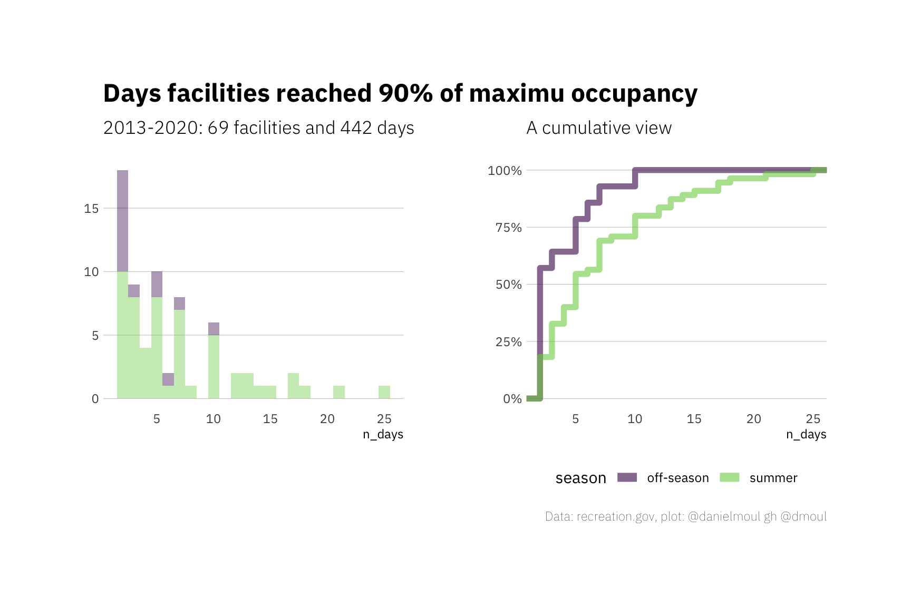

4 Camping occupancy
4.1 What is the occupancy rate at NC campgrounds, and when are they fullest?
Since the data set does not include a declared number of sites per facility+site_type that is reliable, I calculate the daily and weekly percent occupancy as the percent of the maximum recorded occupancy for the campground + site type over the years of interest.
Percent occupancy is defined as follows, for all facilities offering reservations at the time:
Daily: mean percent of occupancy for that day that year, or for that day averaged over multiple years
Weekly: weighted mean percent of occupancy for that week
Limitations
I am looking at 2009-2017, since the data in 2018 and 2019 are unreliable, and usage patterns in 2020 were not typical. In some plots I further subset the data in the interest of readability.
Is 100% occupancy rate the same as max occupancy? I cannot determine that from the data. Can one assume that each campground + site type reached 100% occupancy at least once? If so, then yes, max occupancy would mean 100% occupancy.
This method may under-estimate occupancy rates in earlier years if facilities added additional inventory of an existing site_type. I am unwilling to assume that every facility+site_type reached maximum occupancy every year, so I cannot calculate a yearly max. Since I am using all facilities (not limited to ones offering reservations in 2009), if a facility added additional inventory of an existing site_type, prior years will under-report occupancy rate.
Some sites have a mix of reservable and non-reservable sites. When campers show up and take a campsite, does it show up in the reservations.gov as a reservation on the start_date? Are there campsite still using the honor system, where campers deposit payment during their stay and a park staff person picks it up later. If so, are these entered into the reservation system and do they show up in this data set?

The difference in occupancy rates off-season and during the summer are not as different as I expected. This may be due to the climate in NC: the most pleasant times to camp are in the spring and fall. Scouting and other community groups are most likely to camp in the off-season (while school is in session).

When considering only Friday and Saturday nights, which are the most popular nights for camping:

4.2 Are there trends by week of the year?
Some notes:
- As one would expect, there is tent camping earlier and later in the year at the coast and in the Piedmont, where the weather is more moderate.
- The patterns of tent camping everywhere and RV camping in the mountains have been remarkably consistent week-to-week
- I filtered out cabins in the mountains and RV sites elsewhere since the data seems suspect.

4.3 Max occupancy
How many days have campground + site type experienced max occupancy? Frankly, not as many as I expected. Here are two views of the same information. A list of the campsites are in Appendix 1 Section 7.2.6 Days with occupancy at 100% and 90% of maximum occupancy.

What about days with at least 90% of maximum occupancy? Still not as many as I expected.
